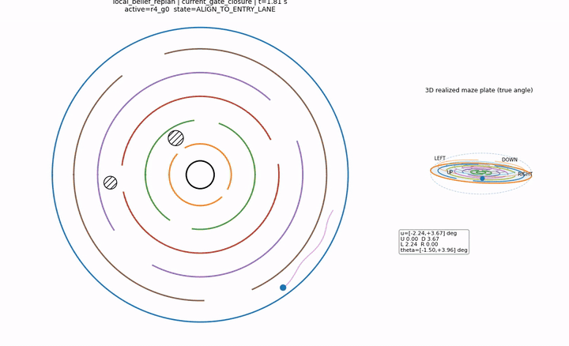

Spatial Change Memory
Accumulate relations across episodes
SCM pools evidence about correlated spatial transitions. A cue at one gate can update belief about a downstream gate before that gate is directly observed.
MazeWorldModel · NeurIPS 2026 Workshop on Continual World Models
University of Washington
Can an agent use past physical encounters to predict a change before seeing it again?
This work separates reactive replanning from learning reusable structure. Spatial Change Memory accumulates relations among transitions across episodes, transfers them to a withheld location, and lets an agent revise its route before direct observation.
An agent may successfully navigate around a newly blocked gate on every visit while learning nothing that helps predict the next blockage. The central question is whether repeated physical interaction can create reusable knowledge about how spatial changes are related.
The environment is a simulated circular maze with changing gates. A held-out transition tests spatial transfer: the agent must use relations learned elsewhere rather than memorize a response at the test location.
Spatial Change Memory
SCM pools evidence about correlated spatial transitions. A cue at one gate can update belief about a downstream gate before that gate is directly observed.
Reactive belief revision
The comparison policy uses the same physical world and controller, but retains its current target until direct sensory evidence forces a local update.
The telemetry-enabled matched rerun records commanded and realized plate angles at every physics step. It connects the policy decision to actuator response and the resulting physical trajectory.
Values above describe the representative telemetry rerun shown here; aggregate statistics remain part of the frozen manuscript evaluation.

Checks whether learned structure transfers to a spatial change that was not available during training.
Separates genuine evidence-based updates from changes that could occur without an informative cue.
Holds the world, seed, physics, and controller fixed so that behavior can be traced to the prediction difference.
Accepted at the NeurIPS 2026 Workshop on Continual World Models.
The public paper, citation, code, and benchmark materials will be linked here after their official release.